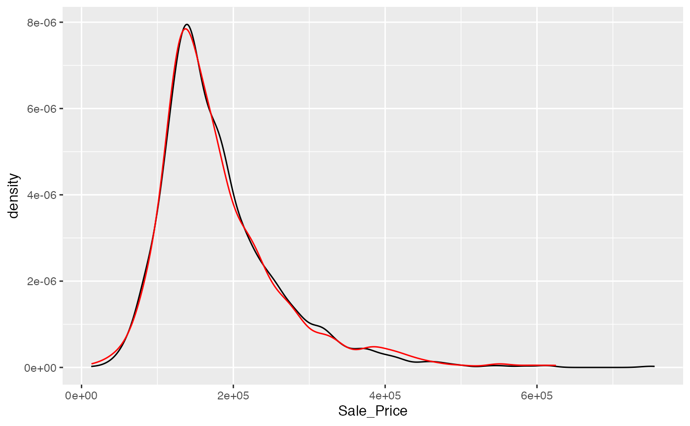
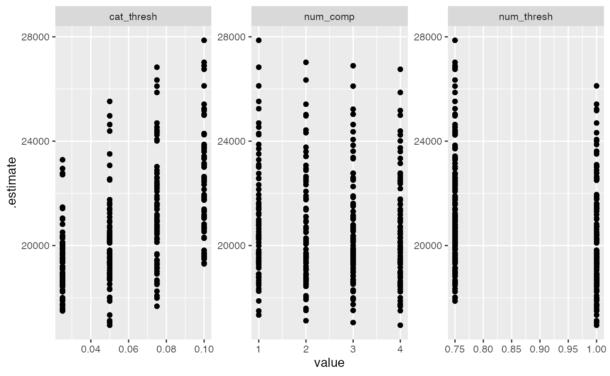
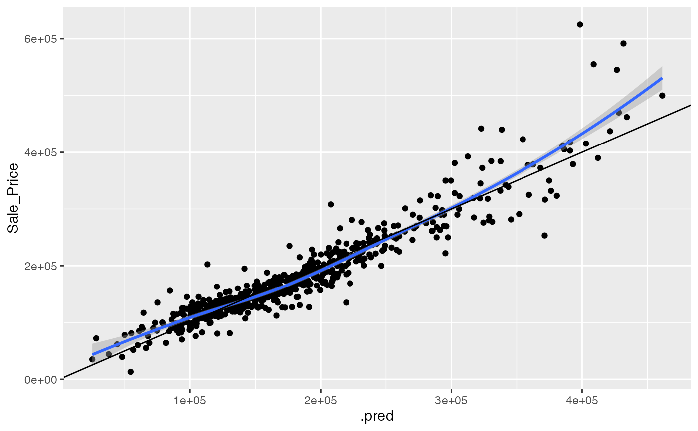

tune.RmdThe tune package helps optimize the modeling process. Users can tag arguments in recipes and model objects for optimization.
Let’s build the lasso linear regression model to predict house prices. We can tune lasso penalty values as well as We can use the ames dataset, which is in the right format.
df <- make_ames()
# ames %>% summary()
set.seed(4595)
data_split <- initial_split(df, prop = .8)
ames_train <- training(data_split)
ames_test <- testing(data_split)
k_folds_data <- vfold_cv(ames_train)Something neat to see is the outcome distribution between the training data and the testing data
ggplot(ames_train, aes(x = Sale_Price)) +
geom_line(stat = "density",
trim = TRUE) +
geom_line(data = ames_test,
stat = "density",
trim = TRUE, col = "red")
Let’s define a recipe where we allow to tune some parameters later on. These parameters cannot be analytically determined from the data by the ML algorithm (a.k.a. a hyper-parameter), but instead we need to tweak it. The way to do so is by o use resampling to estimate model performance over different values of these parameters and use these results to set reasonable values.
tidy_rec <- recipe(Sale_Price~., data = ames_train) %>%
step_corr(all_numeric(), -all_outcomes(), threshold = tune("num_thresh")) %>%
step_nzv(all_numeric(), -all_outcomes()) %>%
step_normalize(all_numeric(), -all_outcomes()) %>%
step_YeoJohnson(all_numeric(), -all_outcomes()) %>%
step_pca(all_numeric(), -all_outcomes(), num_comp = tune()) %>%
step_other(all_nominal(), threshold = tune("cat_thresh")) %>%
step_dummy(all_nominal())We have 3 hyperparameter to tune: num_thresh, num_comp and cat_thresh.
# Define a model
linear_model <- linear_reg(penalty = tune(), mixture = 1) %>%
set_mode("regression") %>%
set_engine("glmnet")We have 1 hyperparameter to tune in the model: the amount of penalty.
There are two things to tune: the model and the pre-processing parameters.
tuning grid for model
model_grid <- grid_regular(parameters(linear_model), levels = 5)We are gonna have 5 different penalty scores
pre-processing grid for recipe
#We can fine tune these threshold to meet what is a realistic values for our preprocessing method. Not adding these filter can cause error (notes)
rec_grid <- grid_regular(parameters(tidy_rec), levels = 5, filter = c(num_thresh > .7 & cat_thresh > .01))We can see which 3 hyper-parameters we can tune in the recipe and which we can tune in the model
parameters(tidy_rec)
#> Collection of 3 parameters for tuning
#>
#> identifier type object
#> num_thresh threshold nparam[+]
#> num_comp num_comp nparam[+]
#> cat_thresh threshold nparam[+]
parameters(linear_model)
#> Collection of 1 parameters for tuning
#>
#> identifier type object
#> penalty penalty nparam[+]We can combine the grids from our model parameters with our pre-processing parameters into a single grid.
model_rec_grid <- merge(model_grid, rec_grid)
model_res <- tune_grid(linear_model,
preprocessor = tidy_rec,
resamples = k_folds_data,
grid = model_rec_grid,
metrics = model_metrics
)We can see that there where no errors (notes)
We can see our features and we can group them by metric
model_res %>%
collect_metrics() %>%
group_by(.metric) %>%
summarise(min = min(mean),
median = median(mean),
mean = mean(mean),
max = max(mean))
#> # A tibble: 4 x 5
#> .metric min median mean max
#> * <chr> <dbl> <dbl> <dbl> <dbl>
#> 1 mae 18658. 20602. 20725. 20725.
#> 2 rmse 30271. 32455. 32542. 32542.
#> 3 rsq 0.803 0.832 0.831 0.831
#> 4 rsq_trad 0.799 0.829 0.827 0.827Mae (mean absolute error) is very low, which is what we want in our model.
We can view Mae for each fold.
model_res %>%
collect_metrics(summarize = FALSE) %>%
pivot_longer(num_thresh:cat_thresh) %>%
filter(.metric == "mae") %>%
ggplot(aes(x = value, y = .estimate)) +
geom_point() +
geom_smooth() +
facet_wrap(~name, scales = "free") #faceting for tuning process for the preprocessing (recipes)
#> `geom_smooth()` using method = 'gam' and formula 'y ~ s(x, bs = "cs")'
#> Warning: Computation failed in `stat_smooth()`:
#> x has insufficient unique values to support 10 knots: reduce k.
#> Warning: Computation failed in `stat_smooth()`:
#> x has insufficient unique values to support 10 knots: reduce k.
#> Warning: Computation failed in `stat_smooth()`:
#> x has insufficient unique values to support 10 knots: reduce k.
What we can see is that as we increase our lumping threshold for categorical varibles our mae increases. Mae stays the same for all the numer_components and mae decreases for higher num_tresh.
model_res %>% select_by_one_std_err("mae")
#> Warning: No value of `metric` was given; metric 'rmse' will be used.
#> # A tibble: 1 x 12
#> penalty num_thresh num_comp cat_thresh .metric .estimator mean n
#> <dbl> <dbl> <int> <dbl> <chr> <chr> <dbl> <int>
#> 1 1.00e-10 0.75 1 0.025 rmse standard 31630. 10
#> # … with 4 more variables: std_err <dbl>, .config <chr>, .best <dbl>,
#> # .bound <dbl>
model_tune <- model_res %>% select_best("mae")To finalize the model we apply this parameters to the initial model. To finalize the recipe we apply this parameters to the initial recipe
linear_model
#> Linear Regression Model Specification (regression)
#>
#> Main Arguments:
#> penalty = tune()
#> mixture = 1
#>
#> Computational engine: glmnet
linear_model <- finalize_model(linear_model, model_tune)
linear_model
#> Linear Regression Model Specification (regression)
#>
#> Main Arguments:
#> penalty = 1e-10
#> mixture = 1
#>
#> Computational engine: glmnet
tidy_rec
#> Data Recipe
#>
#> Inputs:
#>
#> role #variables
#> outcome 1
#> predictor 80
#>
#> Operations:
#>
#> Correlation filter on all_numeric(), -all_outcomes()
#> Sparse, unbalanced variable filter on all_numeric(), -all_outcomes()
#> Centering and scaling for all_numeric(), -all_outcomes()
#> Yeo-Johnson transformation on all_numeric(), -all_outcomes()
#> No PCA components were extracted.
#> Collapsing factor levels for all_nominal()
#> Dummy variables from all_nominal()
tidy_rec <- finalize_recipe(tidy_rec, model_tune)
tidy_rec
#> Data Recipe
#>
#> Inputs:
#>
#> role #variables
#> outcome 1
#> predictor 80
#>
#> Operations:
#>
#> Correlation filter on all_numeric(), -all_outcomes()
#> Sparse, unbalanced variable filter on all_numeric(), -all_outcomes()
#> Centering and scaling for all_numeric(), -all_outcomes()
#> Yeo-Johnson transformation on all_numeric(), -all_outcomes()
#> No PCA components were extracted.
#> Collapsing factor levels for all_nominal()
#> Dummy variables from all_nominal()After determining the best model, the final fit on the entire training set is needed and is then evaluated on the test set. We can use a workflow to put it all together. We put the model and recipe with tuned parameters together.
pricing_model <- workflow() %>%
add_model(linear_model) %>%
add_recipe(tidy_rec)Train model on train set and evaluate on test set
pricing_model_fit <- last_fit(pricing_model, data_split)We can obtain the results produced by tuning functions
pricing_model_fit %>%
collect_predictions()
#> # A tibble: 585 x 5
#> id .pred .row Sale_Price .config
#> <chr> <dbl> <int> <int> <chr>
#> 1 train/test split 218692. 1 215000 Preprocessor1_Model1
#> 2 train/test split 186605. 5 189900 Preprocessor1_Model1
#> 3 train/test split 192488. 8 191500 Preprocessor1_Model1
#> 4 train/test split 174406. 11 175900 Preprocessor1_Model1
#> 5 train/test split 203347. 14 171500 Preprocessor1_Model1
#> 6 train/test split 208288. 17 164000 Preprocessor1_Model1
#> 7 train/test split 201284. 21 190000 Preprocessor1_Model1
#> 8 train/test split 160788. 24 149000 Preprocessor1_Model1
#> 9 train/test split 171758. 29 184000 Preprocessor1_Model1
#> 10 train/test split 91913. 30 96000 Preprocessor1_Model1
#> # … with 575 more rowsWe can calculate the results produced by tuning functions (calculate test set’s mae)
pricing_model_fit %>%
collect_predictions() %>%
mae(.pred, Sale_Price)
#> # A tibble: 1 x 3
#> .metric .estimator .estimate
#> <chr> <chr> <dbl>
#> 1 mae standard 17848.The estimate from final model fit does a bit better than in sample kfold set.
pricing_model_fit %>%
collect_predictions() %>%
ggplot(aes(x = .pred, y = Sale_Price)) +
geom_point() +
geom_smooth() +
geom_abline(slope = 1, intercept = 0)
#> `geom_smooth()` using method = 'loess' and formula 'y ~ x'
This vignette mainly uses great video from Andrw Couch ✴️